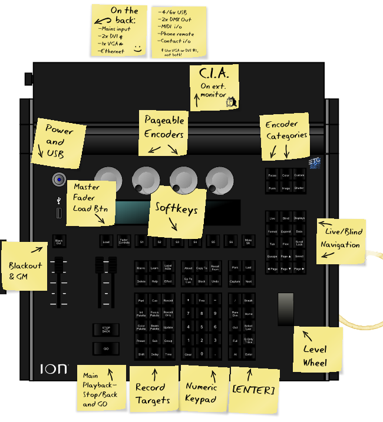
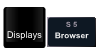
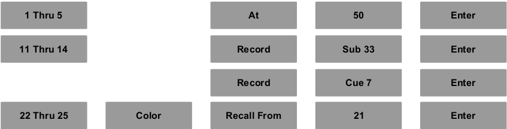
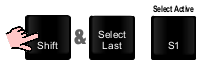
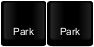
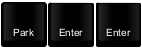

User Tools
- Logged in as: Will Pimblett (will)
- Admin
- Update Profile
- Logout
Sidebar
tech:lx:ion_training_pack
Table of Contents
ETC Ion Training Pack
This training pack heavily uses the ETC Tea Break Tutorials, however we only cover the basic material here, for more information see the Tutorials.
Lessons covered, in some capacity, from the Tea Break Tutorials are:
- Lesson 1: Power-on and Navigation
- Lesson 4: Manual Control and Recording
- Lesson 5: Playback and Editing
- Lesson 11: Sneak
- Lesson 13: Tracking
- Lesson 6: Groups
- Lesson 8: Select Last, Select Active, Select Manual
- Lesson 9: Flexi Modes
- Lesson 10: Channel Check and Park
- Lesson 15: Submasters
Console Layout
The console is the large part on the right, on the left is a submaster wing.

Submaster Wing
Lesson 1: Power on and Navigation
Power-on
Press the power button on the front panel. LEDs will flash, and the console will boot.
Once started up the area on the bottom of an external monitor is referred to as the Central Information Area, or CIA.
Creating a New Show
 Activate the Browser, which allows you to “get to” many areas of the desk that don't have dedicated buttons. Use the arrow keys and [Select] to navigate.
 Use the star icon to identify the Browser as your “Favourite” - the default display in the CIA.
Use the star icon to identify the Browser as your “Favourite” - the default display in the CIA.
- Use the level wheel and/or the [PageUp]/[PageDn] keys to navigate to File
- Use the [PageRight] key to open submenus to get to File | Open | Show File Archive | NNT Base. Press [Select] twice to load the file.
- Return to the Browser then use the [PageRight] key to open submenus to get to File | Save As | Show File Archive then press [Select]. Save the current show, the file should be named the as the name of the show. This show is now saved on the internal hard drive.
You've now loaded the New Theatre base file and saved it's contents to a new show file. The base file contains information common to all shows, such as how many dimmers we have and sets up some default behaviour.
Do not save onto the base file! Make your own copy for the show you're working on.
To save changes to your show you can either go to File | Save on the Browser or use the shortcut [Shift] & [Update].
Navigation
Press the [Live] key. You are now in Live mode - this allows you to control lights… live! Note the Live tab is now active on an external monitor - you can see the gold tab title and border.
Press [Format]. Many displays have multiple formats. In Live, you can choose Live Channel or Live Table.
In channel displays, using [PageUp] and [PageDown] will move onto the next page.
Toggling [Scroll Lock] on will cause the same Paging keys to now only move by one row.
Pressing a Record Target (such as [Sub]) twice in quick succession will brings up a list of that record target type - in this case, submasters - in a new tab.
While in a Record Target view you are working in Blind, this means you can edit things without changing the current levels of the lights onstage. Pressing [Live] puts you back in Live mode.
Along the bottom of the screen you'll notice a number of Tabs, you can cyle through these with the [Tab] key. Each tab is numbered, holding down [Tab] and pressing a number will take you to a corresponding tab. To move tabs between monitors press [Tab]&[PageLeft]/[PageRight]. Pressing [Escape] closes the currently open tab. You cannot close the live and playback displays, these are always displayed. [Shift]&[Tab] will close all active tabs except those mentioned earlier.
Finally pressing [Help] and any other key will put a short description of that key onscreen. This is really helpful if you're not sure what a key does.
Powering Down
Before powering off ensure all lights are turned off, turn down all submasters and [Go To Cue] [0] [Enter].
To power down the console open the Browser, select Power Off Device and press [Select] twice. The console will now power down.
Lesson 4: Manual Control and Recording
Command Structure
Commands on the Ion follows a sentence style structure. As a general rule, the command structure is:
In many cases, not all of the command components are required. For example: 
You'll find nearly all commands are variations on this structure.
Recording
Two primary methods of recording are supported - Selective and Full. Selective recording simply means that a channel selection is provided before the [Record] command. This is often used when recording submasters, palettes, or other non-cue information. With this method, only selected channels are placed into the target (Cue, Group, Sub, Palette, etcetera). Existing information for those channels will be over-written, but other channels that already have data will not be affected.
Full recording means that no channel selection is provided before the [Record] command. A simple ruleset exists for which channels will then be included in the target:
- Channels above zero
- Channels that have moved to zero
- Channels tracking at zero
- Channels with manual information
As a general rule, this means that you record what you see - this is very commonly used when recording cues.
With a terminated command line (look for the ♦ symbol), [Record] will clear your existing channel selection.
When you record a cue the desk will automatically load that cue, there is no need to release manually controlled channels. However this behaviour only happens in a Full record.
Manual Control
To manually control lights you need to be in Live mode, if you are not press the [Live] key to do so.
To control channels you need to make a selection and then give that selection an action. Usually this is done with a single command.
Channel 1 goes to full, [Full] requires an [Enter] after it to terminate the command, this is because other commands can be added after it.
2 & 3 go to 30%, a single diget is assumed to be a multiple of 10, to specify finer detail use two digets. To get 5% you need to type [2][+][3][At][0][5][Enter].
2 & 3, being the last selection, go to 33%.
2 & 3, again the last selection, are incremented by 5% (to 43% then to 53%).
Recording
The current manual state is recorded as Cue 1, this is a 'full store'. Cue 1 is now active in the master playback. The [Cue] key is optional as it is assumed.
Cue 1's time is changed from 5 (the default) to 3 seconds. Note that [Cue][1] is optional, as the current cue is 1 and therefore assumed.
Lesson 5: Playback and Editing
To playback a show we use the and keys. To set ourselves up at the top of the cue list use [Go To Cue] [0] [Enter]. The [Go] button now advances us to cue 1 and then 2 and so on. These fades happen over the times set in the cues.
The key will fade the previous cue in over 1 second, the default Back Time in setup.
You can use the [Stop/Back] key to pause a fade in progress, pressing [Go] will resume the fade, while [Stop/Back] again will fade back to the previous cue.
Live Editing
You can edit 'Live', this is changing the levels of the cue while seeing these changes real-time onstage.
Make a change such as then press to save this change to the active cue.
Blind Editing
Go to Blind: , note that the display background has changed as a reminder that you are in Blind, where the live output of the desk is not affected and edits happen immediately (recording/updating not required).
Use the and keys to move up and down the cue list. To edit a channel value simply select and change, such as [7] [Thru] [12] [At] [50] [Enter].
In Blind mode, there is a third format called “Spreadsheet”. This format allows you to see the levels and tracking across multiple cues. This is often a useful tool to determine when a channel comes in or changes. Use the [Format] key to get to this.
It is important to remember that there are a few commands that will still happen “Live” even if you are in Blind mode.
- [Go]
- [Stop/Back]
- [Go To Cue]
Channel Colours
You'll start noticing that channel values have different colours depending on the activity.
- Yellow indicates that the channel is being controlled by a submaster.
- Blue indicates that the channel is going up in that cue.
- Green indicates that the channel is going down in that cue.
- Magenta indicates that the channel's value has tracked through from a previous cue.
- And finally Red indicates that the channel is under manual control.
If you see red channels while operating a show something is probably wrong, you should use the Sneak function as discussed in a later lesson.
Lesson 11: Sneak
Sneak allows you to restore a channel to its recorded/background state or define a new state, typically with a fade.
With one or more channels selected, will return those channels to the current cue or sub level using the Sneak Time (default of 1 second). [Sneak] [5] [Enter] would do the same, but over 5 seconds rather than 1. [At] [5] [Sneak] [Enter] would set the channel(s) to 50% over 5 seconds.
With a clear command line (no channels selected), will restore all channels to their background level.
Some examples of when you might use rather than setting a level directly:
- Removing, red, manual values from live.
- You were asked to bring a channel to a level during programming, but the designer says “No, never mind.” Sneaking the channel rather than setting a hard zero ensures that tracking is maintained and that no changes are stored for that channel.
- You are in a dress rehearsal, and the designer is making last-minute changes. In order to not distract the actors or draw attention to the changes, change the Sneak Time to 10 in Setup, and append [Sneak] to all changes - for example, [Group] [2] [At] [Full] [Sneak] [Enter].
Submasters can also be Sneaked. For example, perhaps you wish to bring the Houselight submaster to Full over 30 seconds at the end of a performance. Rather than doing this manually, [Sub] [9] [At] [Full] [Sneak] [3] [0] [Enter] will fade the sub for you.
Lesson 13: Tracking
This is a concept that's quite tricky to get your head around. Practice and experience will help a lot here.
Computerised lighting consoles have been with us for roughly three decades. In that time, two distinct approaches have emerged within lighting console design:
- Preset, state or cue-only
- Tracking
Neither approach is right or wrong, they have distinct advantages and disadvantages that we won't go into here.
What's The Difference?
The key difference is what happens when a cue is recorded.
A preset console records a cue by remembering the entire lighting state. Each cue contains a value for every channel. Preset is demonstrated on the left.
A tracking console records a cue by remembering the changes from the previous cue. These are referred to as 'move instructions'. An example is on the right.
Preset consoles run each cue as a cross-fade, all levels are faded on [Go] regardless of whether they actually change.
Tracking consoles run each cue as a move-fade, only levels with move instructions are faded on [Go] this allows multiple cues to be run simultaneously.
Does This Really Matter?
Irrespective of whether we use a cue-only or tracking console, the recorded lighting states will look exactly the same. So, if they look the same, why are you being forced to listen to this propeller-head mumbo-jumbo? The answer is that it has crucial implications on how edits (updating, adding and deleting cues) will affect the show.
On a preset desk, every change affects only that cue, the next cue contains an entirely new look. On a tracking desk changes will track forward until another move instruction is encountered.
In the example above if the designer decided to add downlights to cue 4 for example this change would track through cues 5 and 6 - which is supposed to be a blackout - until it met the 70% move instruction in cue 7.
The advantage of tracking is that changes to the start of a scene, for example adding a new light, will propagate through the cues in that scene, reducing the number of edits that need to be done. Tracking is very useful with dealing with moving lights, a topic this document does not cover.
Stopping Tracks
Although tracking is both quick and powerful, you often want to ensure that tracks do not go too far. In general, you want a channel to track for a scene at most, often less.
Blocks are used to prevent values tracking beyond that point, usually these points are your blackouts or scene changes. See the example above where we have added blocks to to the blackouts/scene changes. The line above the cues represents the block, values will not track forward beyond this point.
Adds a block to cue 6, [Block] is a toggle, do it again to remove the block. Notice an upper-case B apprears next to the cue in the cue list.
Auto-Blocks
Autoblocks are added when a channel is set at a value that is the same as it's level 'upstream'. An autoblock is added such that if that upstream value changes your original intention is maintained. Autoblocks are represented with a lower-case b in the cue list, channels that are autoblocked are underlined.
Issues
There are times when editing that the nature of tracking causes a job to be harder than it would on a preset desk. The Ion has a feature that emulates those features when you need them.
The [Cue Only] command can be added to [Record], [Update] and [Delete] commands.
[Update] [Cue Only] [Enter] will make an update to the current cue, but ensure that those changes do not track foward to the next cue.
In the above cue list if you deleted cue 2, the designer actually didn't want there to be a distinction between the beginning of the scene and downlight coming in, you would lose most of the state as cue 2 is where the move instructions are. [Delete] [Cue] [2] [Cue Only] [Enter] would convert the tracks in cue 3 into move instructions, therefore preserving the state.
Great care should be taken when deleting cues, as it can cause drastic changes to later states.
Lesson 6: Groups
Groups are selections of lights, such as 5 through 8 and 17. You could use a group to quickly select your front light, side light and back light.
This records a group live, this is the quickest way but can be error prone.
Pressing the [Group] key twice quickly brings up the group list. The desk is now in Blind mode.
Group 25 is created and is empty.
Using Groups
You can select groups like a channel, [Group] [2] [5] [At] [4] [Enter] will bring group 25 to 40%.
Direct Selects are a great tool for quickly accessing groups. On the Browser go Virtual Controls | Direct Select Module. With the mouse select where you'd like the module to be on your screen, then click Select and Groups. Your groups are displayed and can be clicked on to select them.
Target Groups
Although you can create pre-planned Groups as above, sometimes it is useful to utilise “Target Groups”. This simply means using an existing record target (Cues, Subs, Palettes, Effects) as a temporary group.
[Group] [Sub] [5] [Enter] will select all the channels active in Submaster 5 for manual control. The top button of a sub by default gives this behaviour.
Lesson 8: Select Last, Select Active, Select Manual
Some operations, recording and pressing clear especially, will clear your channel selection. The [Select Last] key comes in very useful. It simply reselects the same channels you have previously selected.
[Select Active] is accessed by pressing [Shift]&[Select Active] and selecting it on the softkeys. This selects all channels that have a level. To create a manual blackout onstage: [Select Active] [Out]
[Select Manual], again accessed through softkeys, selects all channels that have a manual value.
You can also do things like [1] [Thru] [8] [Select Active] to select only active channels in the 1 through 8 range.
Lesson 9: Flexi Modes
Flexi (aka Flexichannel) allows you to dictate which channels you see onscreen. Simply pressing [Flexi] takes you to the next Flexi state - holding [Flexi] will repaint the softkeys to show your various Flexi options.
| All Channels | All channels appear onscreen. |
|---|---|
| Patched Channels | Channels with an address associated in Patch. This can be a useful view to quickly remove channels that you are not using in a show. This is what we use by default |
| Manual Channels | Channels with manual changes. This is a very useful “programmer” display - the channels that will be affected by Update. |
| Show Channels | Channels stored in Cues and/or Submasters in the show. This can be a useful view for lighting designers, as it will not show channels that they are not using in a rep. |
| Active Channels | Channels above zero in the current Cue, also including channels that just moved to zero. This is another useful view for designers, as they are often not interested in lights that are tracking at 0. |
| Selected Channels | Channels that are currently selected. This is useful to compare channels side-by-side, even if they would normally appear on different screens. |
| View Channels | A user-definable view to show desired channels only. For example, you may want to only show channels used in Act 1, only moving lights or just FOH channels. |
Lesson 10: Channel Check and Park
Channel Check
Channel Check is a mode of the desk which allows you to quickly set a level on a channel and then move onto the next patched channel. This is normally used for a rig check or “flash-around” to verify that channels are working prior to a performance.
[1] [At] [8] {Chan Check} [Enter] will bring Channel 1 to 80%. [Next] will bring 2 to 80% and return Channel 1 to its background (cue/sub) level. Only channels with an address assigned in Patch will be selected in Channel Check mode.
You may need to use [More SK] to access the Chan Check softkey. Pressing any key other than [Next] or [Last] will terminate Channel Check mode.
Park
Often, you wish to bring a Channel or Address to a level, but not have this level recorded into any record targets or have live control of it. Some examples of when you might Park a channel rather than bring it up live:
- Setting the Houselights to 20% during technical rehearsals
- Setting a channel to zero whilst a problem with the lantern is being fixed
- Parking a faulty colour scroller to a non-obtrusive colour during a performance
Channel 1 is parked at Full, this value will not be saved into cues. The value of channel 1 in cues, submasters and manual control will not affect the output. Park overrides everything.
The [Park] key lights up to show that some channels are parked, a P appears by those channels.
 A new tab opens showing Parked channels. You can change levels from this tab. [2] [At] [7] [Enter] would park channel 2 at 70%.
(From the park screen) Channel 1 is unparked. [At] [Enter] means 'remove information'.
 From any view this will unpark all channels. You can unpark individual ones with [Address] [Park] [Enter].
Lesson 15: Submasters
Submasters are lighting states that you assign to the fader banks for manual control. You can then use them for programming, or simply manually controlling lights.
To record a sub set up a lighting state then record onto the Sub record target, for example:
This records the sub, you now need to load it onto a fader. Straight after recording it you can Press [Load] and then the two clicky buttons underneith the fader you want to use. The Sub's number and label will appear on the LCD screen.
Simply slide the fader up and down to fade in and out the lighting state. The top button inline with the fader selects the Sub Group, this group automatically contains the channels that are active in the sub. The bottom button is the flash button, when pressed it immediately 'turns on' the sub and 'turns it off' when you let go.
You can assign timings to subs, and there are many advanced modes we won't go into here. Read the full Tea Break Tutorials for more!
tech/lx/ion_training_pack.txt · Last modified: 2019/05/22 01:02 by Sam Osborne